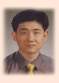

::: 선배님 말씀 :::

이원준 선배님 Profile
○ 1986년 : 한국과학기술대학교 입학
○ 1986년 : MR 동아리 결성 및 제 1대 회장
○ 1994년 : 현대자동차 중앙연구소 입사
○ 1997년 : 한국단자공업주식회사 기획관리실 이사
○ 2001 현재 : 한국단자공업주식회사 중앙연구소 소장 재직중
싸늘한 바람과 떨어지는 낙엽을 볼 때 쯤이면, 어느덧 MR인의 계절이 왔다라는 생각을
갖게 됩니다. 벌써 15년이란 세월이 훌쩍 지나버렸지만, 매년 이맘 때가 되면, 저는 또 성장한 새내기의 모습을
보기 위해 대전으로 발길을 옮깁니다.
MR 후배 여러분. MR인의 가을축제를 준비하는 여러분의 모습을 볼 때 늘 기특해
보입니다. 한가지의 목표를 가지고, 회장, 부회장 아래 조직적으로 총회를 준비하는 여러분의 모습. 그 모습은 미래
여러분들이 사회에 진출하면서 겪게 될 조직생활의 모습이라고 해도 과언이 아닐 것입니다. 동아리 회지를 통해서나마
이런 기회를 준 후배 여러분들에게 감사드리고, 술자리(?)에서의 몽롱한 얘기보다는 맑은 정신으로 말씀드리게 되어
저 또한 기쁨게 생각합니다. 이 기회에 선배로서 후배 여러분들에게 바라는 몇 가지만 말씀드리겠습니다.
세상은 여러분을 기다려 주지 않습니다. 다만, 준비하는 자에게만 세상이 열립니다.
인생을 살면서 모든 사람들에게 세번의 기회가 주어진다고 합니다(그래서 삼세판이란 말이 나왔을지는 모르지만). 사랑하는
사람과의 결혼, 직장에서의 성공 여부, 사업에서의 성공 여부 등… 앞으로 여러분 앞에 어떤 길이 나타나고, 어떤
방향으로 판단을 내리게 될 지 모르지만, 준비하십시오. 그러나, 방향성이 없는 준비는 어리석은 짓입니다. 본인의
목표를 설정하고, 항상 그 목표를 위해 매진할 수 있는 후배 여러분이 되었으면 합니다. 그러면 반드시, 여러분에게는
세상이 열릴 것입니다.
세상이 열리면 그 "세상을 다 가져라."
CF에 나오는 광고멘트입니다. "세상을 다 가져라". 이 시대를 살고 있는 젊은이들은 (사실
저도 젊다고 생각합니다만) 참 불쌍합니다. 하고 싶은 일들도 많고, 외부에서 바라는 일도 많습니다. 실로 만능엔터테인먼트를
이 시대는 바라고 있습니다. 급속히 변화하는 세상에서 살아 남기 위해서는 본인 스스로도 다방면에 능력을 보유하고
있어야 합니다. 그만큼, 여러분은 한 분야만 잘한다고 자만심에 빠지면 안됩니다. 한 분야에서 최고이고, 거기에
한 분야를 덧 붙일 때 여러분은 실로 전투력이 배가되고, 세상을 다 가질 수 있는 최고 전문인으로 성장할 수 있다.
불확실한 미래에 대해 먼저 살아본 선배의 조언을 들어라.
여러분들은 참으로 선택 받은 사람들입니다. 소위 386세대인 일부 MR 몇 회원들은 불확실한 미래에 대해 조언을
구할 선배가 없었습니다. 단지, 동기들과 논의했을 뿐이지요. 그러나, 이제는 여러분 앞에 다방면으로 사회생활을
경험한 선배들이 너무도 많습니다. 후배들이 찾아오는 것을 싫어하는 선배들은 없습니다. 그런 선배가 있다면 무늬만
MR 선배겠지요. 선배들이 겪었던 삶을 참고하여 여러분의 인생을 설계하십시오. 그러나, 똑같이 설계하고, 똑같이
살아가지는 마십시오. 지금껏 살아온 MR선배들은 후배 여러분들이 더욱 멋진 삶을 살아 갈 것이라고 믿고 있고,
그만큼 능력을 지니고 있다고 생각하기 때문에.
한번 MR인은 영원한 MR인
MR 회원이 된 동기를 들어보면, 참으로 다양합니다. 아톰과 태권브이를 만들고 싶어서, 학과공부에 도움이 될 것
같아서, SBS TV드라마를 보면서, 그냥 친구따라 강남간다기에, … 지금까지도, MR을 거처간 회원들은 많았고,
회원이 많았던 만큼, 중도에 동아리 생활을 접은 회원들과 졸업 후 연락이 두절된 회원들도 많았습니다. 우리 MR은
강요하지도 않고, 개개인을 배려하지도 않습니다. 다만, 자신이 아끼는 만큼, 동아리의 정을 더욱 느끼게 되는 그런
동아리일 것입니다. 자신이 노력하고, 실천하는 만큼 동아리는 여러분들에게 더욱 다가올 것입니다. 이제는 총회가
되면 16년의 차이가 나는 선배, 후배들이 있습니다. 어느덧 MR 선후배도 형-동생관계에서 삼촌-조카관계로 발전했고,
앞으로는 부자관계까지 지속될 것입니다. 영원한 MR인은 여러분이 스스로 만드는 것이고, 이 점이 선배들이 후배들에게
바라는 동일한 마음입니다.
늘 열심히 생활하는 MR 후배들이 자랑스러운 이원준 선배로부터